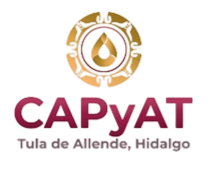

<!-- Mostramos el layout solo si NO estamos en login -->
<ng-container *ngIf="!isLoginPage">
  <mat-sidenav-container class="layout">
    <!-- Sidebar -->
    <mat-sidenav mode="side" opened class="sidebar">
      <div class="sidebar-header">
        <div class="logo">
          
        </div>
      </div>

      <!-- Lista de navegación -->
      <mat-nav-list class="sidebar-list">
        <mat-list-item [routerLink]="['/trabajadores']" class="sidebar-item">
          <mat-icon class="sidebar-icon">group</mat-icon>
          <span class="sidebar-text">Trabajadores</span>
        </mat-list-item>
        <mat-divider></mat-divider>

        <mat-list-item [routerLink]="['/categorias']" class="sidebar-item">
          <mat-icon class="sidebar-icon">category</mat-icon>
          <span class="sidebar-text">Categorías</span>
        </mat-list-item>
        <mat-divider></mat-divider>

        <mat-list-item [routerLink]="['/materiales']" class="sidebar-item">
          <mat-icon class="sidebar-icon">inventory</mat-icon>
          <span class="sidebar-text">Materiales</span>
        </mat-list-item>
        <mat-divider></mat-divider>

        <mat-list-item [routerLink]="['/proveedores']" class="sidebar-item">
          <mat-icon class="sidebar-icon">local_shipping</mat-icon>
          <span class="sidebar-text">Proveedores</span>
        </mat-list-item>
        <mat-divider></mat-divider>
      </mat-nav-list>

      <!-- Botón de cerrar sesión en esquina inferior izquierda -->
      <!-- Botón de cerrar sesión -->
<div class="logout-container">
  <button (click)="logout()" class="logout-button">
    <mat-icon class="logout-icon">exit_to_app</mat-icon>
    <span>Cerrar sesión</span>
  </button>
</div>

    </mat-sidenav>

    <!-- Contenido principal -->
    <mat-sidenav-content class="main-content">
      <mat-toolbar color="primary" class="toolbar">
        <div class="toolbar-left">
          <a>
            <span class="toolbar-text">COMISIÓN DE AGUA Y ALCANTARILLADO DE TULA</span>
          </a>
          <a mat-button [routerLink]="['/estadisticas']">
            <mat-icon>assignment</mat-icon>
            <span class="toolbar-text">Estadísticas</span>
          </a>
          <mat-divider></mat-divider>
          <a mat-button [routerLink]="['/movimientos']">
            <mat-icon>sync_alt</mat-icon>
            <span class="toolbar-text">Movimientos</span>
          </a>
          <mat-divider></mat-divider>
          <!--<a mat-button [routerLink]="['/usuarios']" *ngIf="userRole === 'Administrador'">
            <mat-icon>person</mat-icon>
            <span class="toolbar-text">Usuarios</span>
          </a>-->
          <mat-divider></mat-divider>
          <span style="color: white;">{{ userRole }}</span>
        </div>
      </mat-toolbar>

      <div class="content">
        <router-outlet></router-outlet>
      </div>

      <!-- Footer dentro del contenido principal -->
    </mat-sidenav-content>
  </mat-sidenav-container>
</ng-container>

<!-- Solo router-outlet si estamos en login -->
<ng-container *ngIf="isLoginPage">
  <router-outlet></router-outlet>
</ng-container>

<div class="footer">
  © {{ currentYear }} Comisión de Agua y Alcantarillado de Tula de Allende, Hidalgo. Todos los derechos reservados.
</div>
